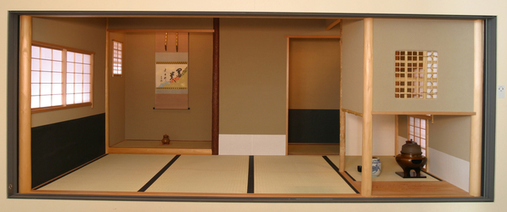

ABOUT US
The Asian Art Museum of San Francisco was formed in 1959. It was when collector Avery Brundage donated nearly
8,000 outstanding Asian artworks to the city of San Francisco.A new wing of the de Young Museum in Golden Gate Park
was opened in 1966 to showcase the priceless collection. Although Brundage's stated goal was to create a “bridge of
understanding” between the U.S. and Asia, a closer review of his actions reveal that he held racist, sexist, and anti-Semitic
beliefs that directly contradict the museum's mission and values. In 2020, the museum removed a bust of Brundage
from its lobby and initiated the public phase of a thorough re-examination of his troubling legacy. Today, the museum
collection has grown far beyond that founding gift to comprise more than 18,000 artworks spanning 6,000 years and
every region of Asia.
The collection has approximately 18,000 works of art and artifacts from all major Asian countries and traditions,
some of which are as much as 6,000 years old. Galleries are devoted to the arts of South Asia, Iran and Central Asia,
Southeast Asia, the Himalayas, China, Korea and Japan. There are more than 2,000 works on display in the museum galleries.
The museum has become a focus for special and traveling exhibitions, including: the first major Chinese exhibition to travel
outside China since the end of World War II (in 1975), an archaeological exhibition which attracted 800,000 visitors over an eight-week period,
and an exhibition on wisdom and compassion opened by the Dalai Lama in 1991.The museum embarked on a $90 million transformation project
in 2017 to accommodate large special exhibitions and a growing, vibrant contemporary art program. slated for completion in 2020.
The Akiko Yamazaki and Jerry Yang Pavilion and the East West Bank Art Terrace, designed by Kulapat Yantrasast of wHY — as well as refreshed collection
galleries and public amenities.
Reference:https://en.wikipedia.org/wiki/Kulapat_Yantrasast

A Japanese tea house is displayed on the second exhibition floor of the museum. This teahouse was built in Kyoto, disassembled, shipped to San Francisco
and reconstructed in the museum by Japanese carpenters. The name of the tea house can be seen on a wooden plaque "In the Mist" located next to the
Tea House on the second floor of the museum, The calligraphy on this wooden plaque is based on the calligraphy by Yamada Sobin
and commissioned by Yoshiko Kakudo, the museum's first curator of Japanese art.
The Tea House was designed by architect Osamu Sato as a functioning teahouse, as well as a display case.
It is a three and three-quarters (sanjo daime) mat room. It is complete with an alcove for the display of a scroll and flowers,
an electric-powered sunken hearth used in winter for the hot water kettle, and a functioning preparation area (mizuya) with fresh running water and drain.
Today, the Asian Art Museum is recognized and respected as one of the leading institutions and resources for
the study and display of Asian art in America. Its holdings range from tiny jades to monumental stone sculptures, and
include paintings, textiles, furniture, arms and armour, puppets, basketry and more. Avery Brundage's contribution includes
some of the Museum's most celebrated objects—including a gilt bronze Buddha dated 338CE—the oldest known
dated Chinese Buddha in the world and often cited as atextbook example of Chinese Buddhist art.
Mission
The Asian Art Museum of San Francisco connects art to life. Our mission is to inspire new ways of thinking by connecting
diverse communities to historical and contemporary Asian art and culture through our world-class collection, exhibitions and
programs.
In a fundamental sense, an artwork is a living thing. It first serves to express the intentions and aesthetic sensibilities of the
people who created it or commissioned it. From that point on, it takes on new meanings for everyone who comes in contact
with it. In this way, even ancient artworks acquire relevance to our lives today.
The Asian Art Museum of San Francisco contributes to the continuity of art through its role in preserving and researching
Asian art and promoting its understanding and appreciation.
Purpose
We hope the artworks here will awaken an understanding of the art, culture, and history of Asia and inspire a wider
audience to discover the creative expression in works both ancient and modern.
"Supporting world culture for the present and future."
© 2022 Asian Art Museum : Chong-Moon Lee Center for Asian Art and Culture l Terms and Conditions l Privacy Policy l Photography and Image Rights